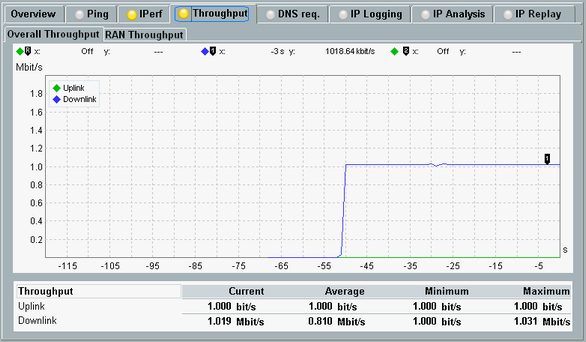
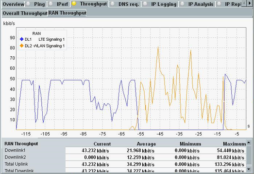
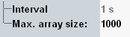

The "Throughput" measurement reports the throughput at the DAU on IP level, in uplink and downlink direction. The entire packets are considered, including the IP header - in contrast to iperf measurements that consider only the payload.
Note that the measured downlink data rate on IP level and the downlink data rate on lower layers can differ. If the lower layers are not able to transfer the set IP data rates, they discard IP packets.
The "Overall Throughput" tab shows the total throughput at the DAU. Several signaling applications and DUT connections can contribute to the overall throughput.

The "RAN Throughput" tab shows the throughput per signaling application instance. You can measure the throughput for up to four signaling applications in parallel.

The diagram shows the overall throughput on IP level vs. time.
"Uplink" indicates the received bit rate measured at the DAU while "Downlink" indicates the bit rate transmitted to the DUT. In downlink direction, the throughput values on RLC or MAC level can differ from the throughput on IP level.
Below the diagram, the measured/transmitted current, minimum and maximum throughput values are displayed.
Remote command:Plus corresponding FETCh commands.
The diagram shows the throughput per signaling application instance (RAN), in uplink and downlink direction.
Remote command:Plus corresponding FETCh commands.
The displayed traces are selected via the softkey "Display" > hotkey "Select Traces".
- There are four RAN slots. You can assign a RAN to each slot. For each RAN, you can display the uplink throughput and/or the downlink throughput. So there are in total up to eight traces displayed in parallel.
- If a RAN is selected at the top of the data application measurement dialog box, this RAN is automatically assigned to the first slot. See also "RAN Selection".
- During a running measurement, you can assign RANs to still empty slots. But you cannot remove already assigned RANs.
To remove assigned RANs, you must stop the measurement, change the assignment and restart the measurement.
Press the "Config" hotkey to access the measurement settings.

- "Interval": displays the time interval between two throughput measurement results
- "Max. array size": specifies the maximum number of result values in the result trace
Example: Interval 1 s plus size 5 means that there are up to 5 results in the trace, at the X-axis positions "0 s" to "-4 s". Older results are discarded.
Remote command:Turn the measurement on or off using the [ON | OFF] or [RESTART | STOP] keys. Alternatively, right-click the "Throughput" softkey.
The softkey shows the current measurement state. Additional measurement substates can be retrieved via remote control.
Remote command: